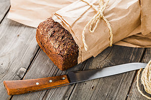
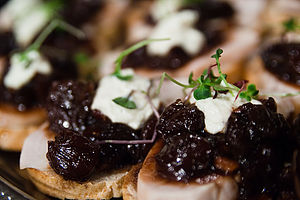

|
Its all about the bread: Easy home baking April 16, 2016 | Carla Tan  Directions 1. In a large bowl, dissolve yeast in warm water. 2. Add the sugar, salt, oil and 3 cups flour. 3. Turn onto a floured surface; knead until smooth and elastic, about 8-10 minutes. 4. Punch dough down.... Salad Recipe April 17, 2016 | Carla Tan 
Ingredients 2 tablespoons chopped red onion 1 tablespoon canola mayonnaise 1 tablespoon plain 2% reduced-fat Greek yogurt.... |
The best finger food: Olive crostini April 20, 2016 | Eduard Somera  Prep time: 15 minutes Cook time: 2 minutes Yield: Makes approximately 24 toasts Ingredients 1/2 cup black olives 1/2 cup green olives with pimientos 2 medium cloves garlic.... |
MADE BY CARLA
& EDUARD WITH
LOVE
|